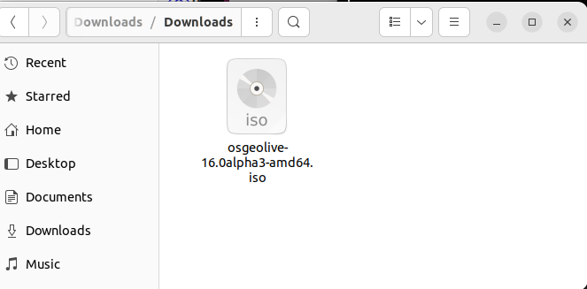
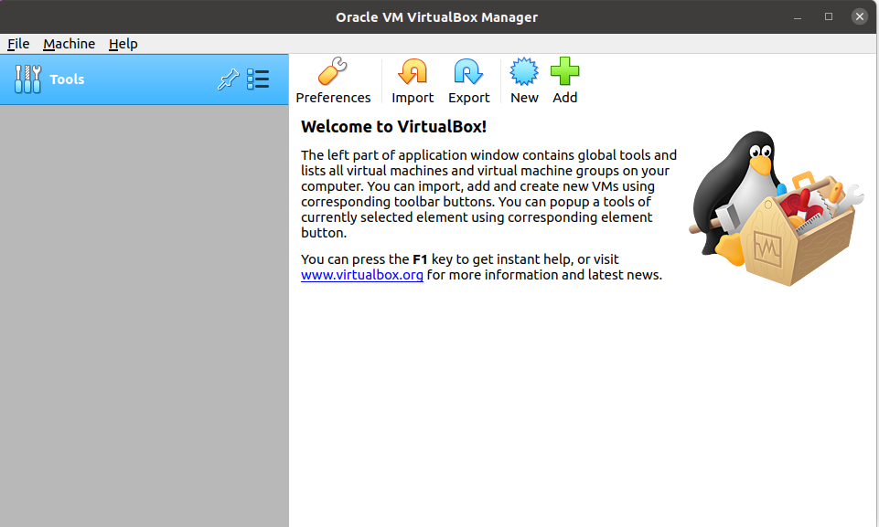

2. OSGeoLive-installation¶
Alla nödvändiga verktyg finns tillgängliga på OSGeoLive.
Viktigt
Innan du deltar i ett workshop-evenemang, se till att du kan använda OSGeoLive med valfri metod eller Bilaga: Installation på din dator.
I den här workshopen används OSGeoLive på VirtualBox.
2.1. Installera VirtualBox.¶
Detta är en allmän beskrivning av hur du installerar VirtualBox. Fullständiga detaljer om installationen finns i dokumentationen för VirtualBox <https://www.virtualbox.org/>`__.
Linux-distributioner:
Lägg till följande rad i din /etc/apt/sources.list. Ersätt <mydist> med namnet på din distribution, beroende på vilken distribution du använder.
deb https://download.virtualbox.org/virtualbox/debian <mydist> contrib
Lägg till nycklarna:
wget -q https://www.virtualbox.org/download/oracle_vbox_2016.asc -O- | sudo apt-key add -
wget -q https://www.virtualbox.org/download/oracle_vbox.asc -O- | sudo apt-key add -
Installera Virtual box med hjälp av:
sudo apt-get update
sudo apt-get install virtualbox-6.1
Mer detaljerad och aktuell information finns här
2.2. OSGeoLive på en VirtualBox¶
2.2.1. Ladda ner OSGeoLive 17¶
Denna installationsmetod motsvarar iso-distributionen av OSGeoLive. För andra installationer besök OSgeoLive
Observera
Bilderna i det här avsnittet kanske inte motsvarar den VirtualBox- eller OSGeoLive-version som är installerad på ditt system, men arbetsflödet är liknande.
Från https://download.osgeo.org/livedvd/releases/17/
Ladda ner osgeolive-17-amd64.iso

Nedladdningen sparas i katalogen Downloads.
2.2.2. Skapa den virtuella maskinen¶
Öppna Virtual Box
Klicka på Ny och fyll i följande information
Namn OSGeoLive 17
Typ Linux
Version Ubuntu (64-bitars)
Minnets storlek 4096
Hårddisk Skapa en virtuell hårddisk nu

Klicka på Skapa och fyll i följande information
Filplats Välj en lämplig plats för den virtuella hårddisken
Filstorlek 10,0 GB
Filtyp för hårddisk VDI (VirtualBox Disk image)
Lagring på fysisk hårddisk Dynamiskt allokerad

2.2.3. Installera OSGeoLives ISO¶
På Lagring står det:
- Kontroller:
IDE
- IDE Sekundär enhet 0:
[Optisk enhet] tom
Välj Lagring från virtual box egenskaper och klicka på Tom
Klicka på den lilla diskikonen och välj Välj/skapa en virtuell disk

Navigera till den plats där ISO-filen installerades

Istället för att vara tom har den nu ISO installerad

Installationen har nu följande lydelse:
- Kontroller:
IDE
- IDE Sekundär enhet 0:
[Optisk enhet] osgeolive-10.0alpha3-amd64.iso (4,13 GB)
2.2.4. Starta OSGeoLive¶
Klicka på Starta-knappen och klicka på Fånga för att fånga musrörelserna
Klicka på Testa eller installera Lubuntu
Observera
OSGeoLives konto är user och lösenordet är user
Efter några sekunder kommer OSGeoLive att starta

Observera
OSGeoLives konto är user och lösenordet är user
2.3. Ubuntu-installation¶
Uppdatera källorna för att inkludera postgresql
curl https://www.postgresql.org/media/keys/ACCC4CF8.asc | sudo apt-key add -
sudo sh -c 'echo "deb http://apt.postgresql.org/pub/repos/apt/ \
$(lsb_release -cs)-pgdg main" > /etc/apt/sources.list.d/pgdg.list'
Installera PostgrSQL, PostGIS och pgRouting
sudo apt-get update
sudo apt-get install -y \
osm2pgrouting \
postgresql-15 \
postgresql-15-postgis-3 \
postgresql-15-postgis-3-scripts \
postgresql-15-pgrouting